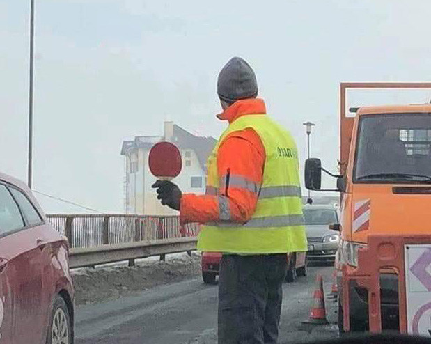
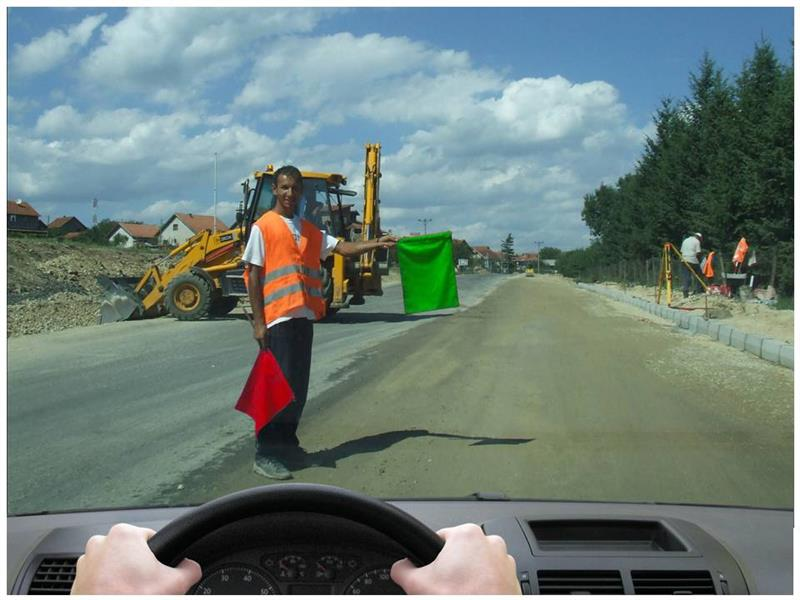
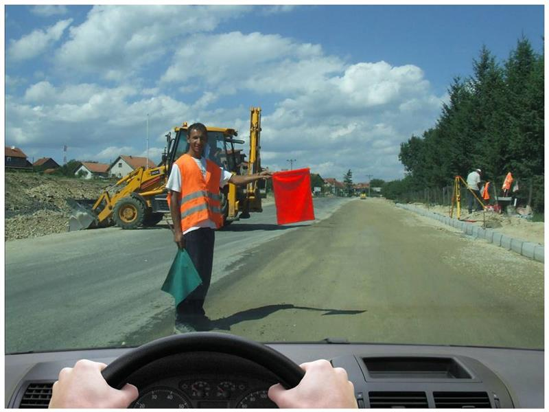
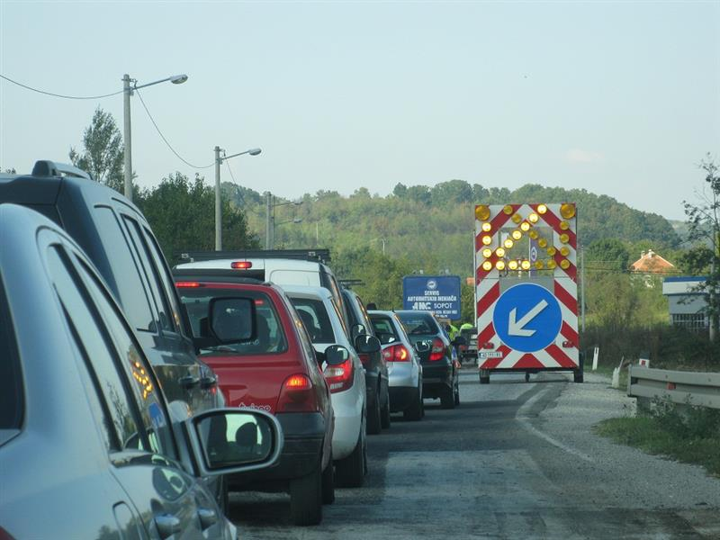

Obelezavanje mesta na kome se izvode radovi
Broj pitanja: 8

Prilikom nailaska na mesto na kom se izvode radovi na putu vozač je dužan da ukloni svoje vozilo na zahtev izvođača radova i ne sme da ometa radnika koji obavlјa radove na putu ili pored puta

Na delu puta na kome su nastale prepreke, odnosno oštećenјa učesnici u saobraćaju (pešaci, vozači...) moraju biti obezbeđeni postavlјanјem branika

Slobodan prolaz

Zabranjen prolaz

Signalna tabla sa slike postavlja se na zadnјi deo motornih vozila ili prikolice